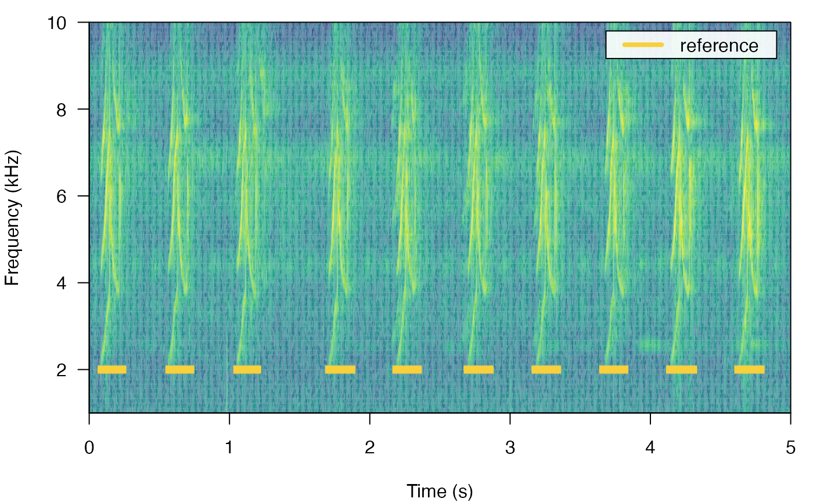

label_spectro plot a spectrogram along with amplitude envelopes or cross-correlation scores
Arguments
- wave
A 'wave' class object.
- reference
Data frame or 'selection.table' (following the warbleR package format) with the reference selections (start and end of the sound events). Must contained at least the following columns: "sound.files", "selec", "start" and "end".
- detection
Data frame or 'selection.table' with the detection (start and end of the sound events) Must contained at least the following columns: "sound.files", "selec", "start" and "end".
- envelope
Logical to control whether the amplitude envelope is plotted. Default is
FALSE.- threshold
A numeric vector on length 1 indicated the amplitude or correlation threshold to plot on the envelope or correlation scores respectively. Default is
NULL. Note that for amplitude the range of valid values is 0-1, while for correlations the range is 0-100.- smooth
A numeric vector of length 1 to smooth the amplitude envelope with a sum smooth function. It controls the time range (in ms) in which amplitude samples are smoothed (i.e. averaged with neighboring samples). Default is 5. 0 means no smoothing is applied.
- collevels
Numeric sequence of negative numbers to control color partitioning and amplitude values that are shown (as in
spectro).- palette
Function with the color palette to be used on the spectrogram (as in
spectro)- template.correlation
List extracted from the output of
template_correlatorcontaining the correlation scores and metadata for an specific sound file/template dyad. For instance 'correlations[[1]]' where 'correlations' is the output of atemplate_correlatorcall. If supplied the correlation is also plotted. Default isNULL.- line.x.position
Numeric vector of length 1 with the position in the frequency axis (so in kHz) of the lines highlighting sound events. Default is 2.
- hop.size
A numeric vector of length 1 specifying the time window duration (in ms). Default is 11.6 ms, which is equivalent to 512 'wl' for a 44.1 kHz sampling rate.
- ...
Additional arguments to be passed to
spectrofor further spectrogram customization.
Value
A spectrogram along with lines highlighting the position of sound events in 'reference' and/or 'detection'. If supplied it will also plot the amplitude envelope or corelation scores below the spectrogram.
Details
This function plots spectrograms annotated with the position of sound events. Created for graphs included in the vignette, and probably only useful for that or for very short recordings. Only works on a single 'wave' object at the time.
References
#' Araya-Salas, M., Smith-Vidaurre, G., Chaverri, G., Brenes, J. C., Chirino, F., Elizondo-Calvo, J., & Rico-Guevara, A. (2023). ohun: An R package for diagnosing and optimizing automatic sound event detection. Methods in Ecology and Evolution, 14, 2259–2271. https://doi.org/10.1111/2041-210X.14170
Author
Marcelo Araya-Salas (marcelo.araya@ucr.ac.cr).
Examples
{
# load example data
data(list = "lbh1", "lbh_reference")
# adding labels
label_spectro(
wave = lbh1,
reference = lbh_reference[lbh_reference$sound.files == "lbh1.wav", ],
wl = 200, ovlp = 50, flim = c(1, 10)
)
# adding envelope
label_spectro(
wave = lbh1,
detection = lbh_reference[lbh_reference$sound.files == "lbh1.wav", ],
wl = 200, ovlp = 50, flim = c(1, 10)
)
# see the package vignette for more examples
}
